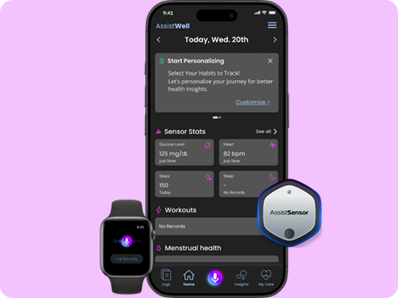
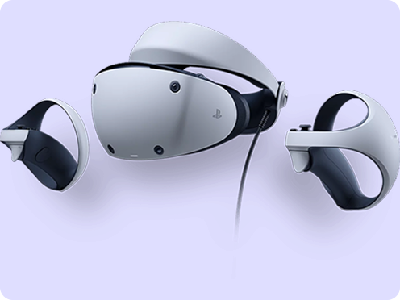
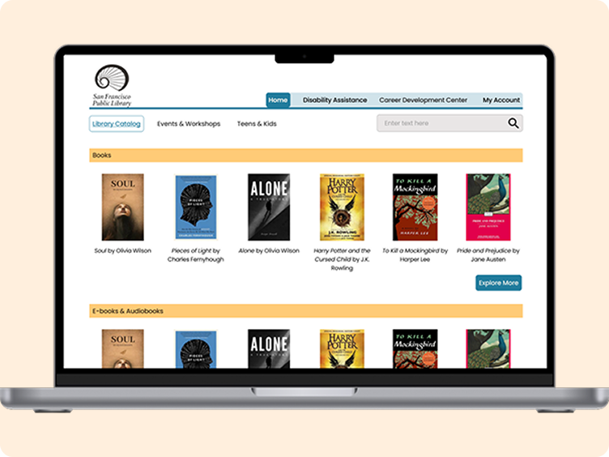

I designed a health tracking app to help users manage migraines with AI-driven insights.

Developed a content strategy to improve engagement and consistency for the PlayStation VR2 website.

Worked on redesigning the SFPL website’s information architecture to improve navigation and content discoverability.
Working on designing a service concept to reduce food waste by connecting surplus food from businesses to communities in need.